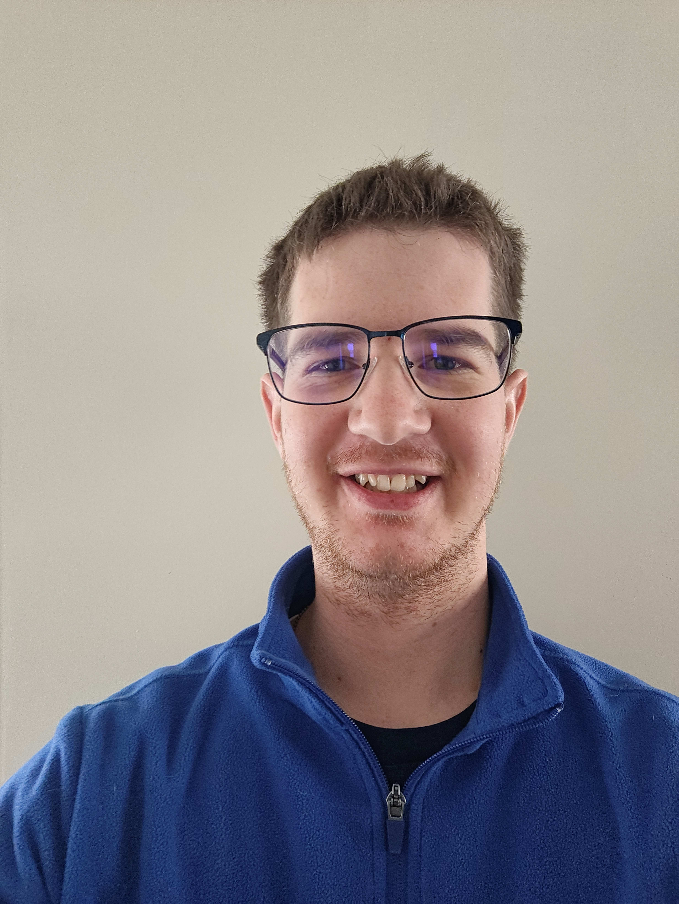

Joseph Anderson | WDD 130
Howdy Y'all!! I am Joseph. I love to cook and spend time outside, along with this I recently got into metal models. I love really relaxing by either sitting down and watching a movie or show, or playing a video game. I've lived in Utah my entire life and have loved living here! I served my mission in The Houston Texas Mission. This is the one that is located in the North-western portion of Houston. My favorite scripture is Alma 7:11-13. I love how it teaches us more about the Atonement of Jesus Christ. Encompassing more about what it covers and how it can help us in our personal lives. I'm currently not working, I'm in search of a job and career that I can really get into and take as my own. Yet I have done many different things from being a general manager of a resturaunt, to just being a cook/chef, to one of my more rescent jobs as a teller/loan officer at a credit union.